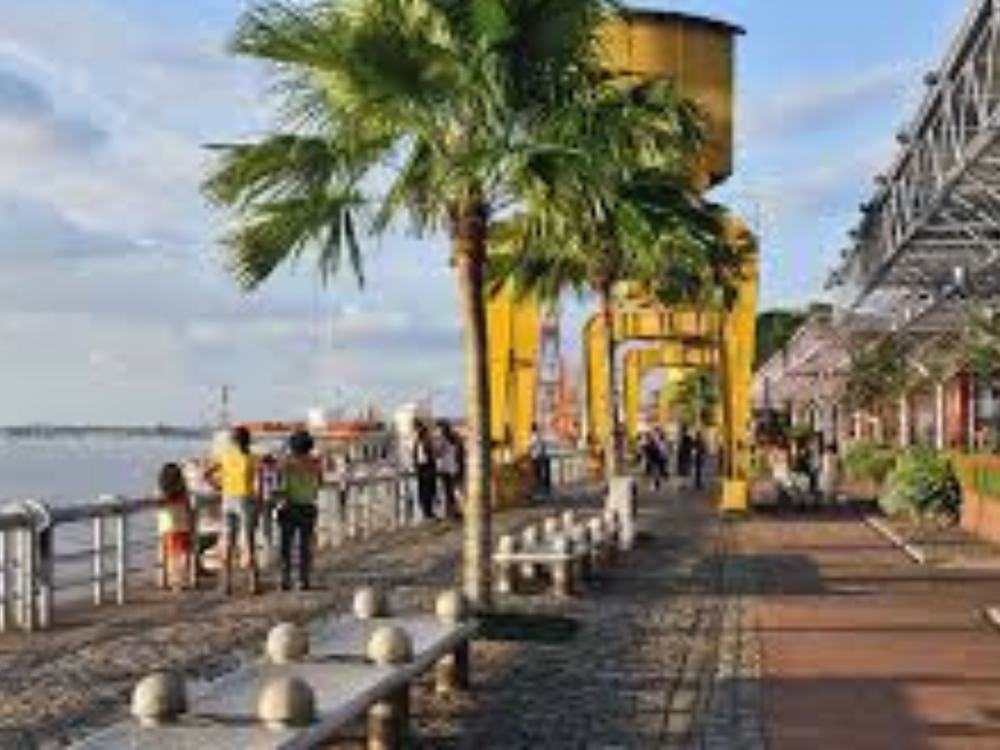

O Pará é o segundo maior estado do Brasil e o gigante econômico da Região Norte. Cortado pelo Rio Amazonas, o estado é coberto pela Floresta Amazônica e destaca-se nacionalmente pela extração de minérios e pela produção de açaí e cacau. Sua cultura é única e vibrante, marcada por uma forte herança indígena na culinária — com pratos como o pato no tucupi e o tacacá — e por manifestações grandiosas como o Círio de Nazaré e o ritmo do carimbó.
